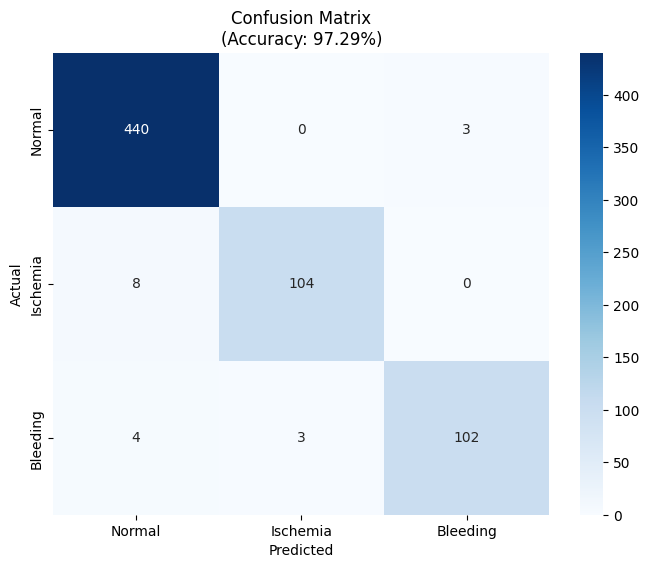

Case study 03案例 03
Using CT physics to guide an AI representation choice用 CT 物理知识指导 AI 输入表示
In a collaborative stroke-classification project, I contributed the domain reasoning for using Hounsfield units as the physical basis of the image representation. My collaborator built the modeling framework; my contribution was to shape what the model should learn from.
在合作的卒中分类项目中，我提出以 Hounsfield units（HU）作为图像表示的物理基础。建模框架由合作者构建，我的贡献是用领域知识指导模型应从什么信息中学习。
- Domain领域
- CT image classificationCT 图像分类
- My role我的职责
- Domain reasoning and representation proposal领域推理与输入表示建议
- Recorded result已记录结果
- 97.29% classification · 664 test images分类 accuracy 97.29% · 664 张测试图像
Decide what the image numbers mean先判断图像数值代表什么
The project involved classifying CT images in a stroke-related task. Before discussing the classifier architecture, I focused on the scientific meaning of the input. A model receives numbers, but their meaning depends on how the image was acquired, calibrated and displayed.
项目涉及卒中相关的 CT 图像分类。在讨论分类器架构之前，我关注输入的科学含义。模型接收的是数字，而这些数字的意义取决于图像如何采集、标定和显示。
My contribution was the proposal to work from Hounsfield units rather than treating image intensity as an arbitrary grayscale pattern. The modeling framework itself was my collaborator’s work.
我提出从 Hounsfield units 出发，避免把图像强度仅作为任意灰度模式。建模框架本身由合作者完成。
Connect the representation to CT physics把输入表示连接到 CT 物理
The reasoning starts with the distinction between a displayed brightness and a calibrated CT value. Hounsfield units give attenuation-related values a defined physical scale. For CT images whose metadata specifies HU output, the stored pixel value is transformed using the rescale slope and intercept. The accompanying metadata therefore matters to interpretation.
推理从显示亮度与标定后的 CT 数值之间的区别出发。Hounsfield units 为衰减相关数值提供有定义的物理尺度。对于元数据指定 HU 输出的 CT 图像，存储像素值通过 rescale slope 与 intercept 转换，因此解读数值需要相应元数据。
My recommendation concerned that physical meaning. If a model is expected to learn from tissue-related differences, its input representation should preserve the relevant calibrated information where available. This does not make image geometry irrelevant; it gives the intensity component an interpretable basis alongside spatial context.
我的建议针对的正是这种物理含义。如果希望模型学习与组织相关的差异，输入表示就应尽可能保留相关的标定信息。空间几何仍然重要，而强度信息也应有可解释的物理基础。
HU is still represented by image pixels. The useful distinction is calibrated values versus unqualified brightness values, not physical units versus images. A screenshot or a windowed export may no longer retain enough information to reconstruct the original HU reliably. The reasoning therefore depends on what source data and metadata are actually available.
HU 依然由图像像素承载。关键区别在于是否使用经过标定的数值。截图或经过窗宽窗位处理的导出图像，可能已不包含可靠恢复原始 HU 所需的信息，因此这种方法还取决于实际可获得的数据与元数据。
That reasoning helped define a better scientific question for the collaboration: which representation lets the classifier use meaningful intensity information? It avoided assuming that an architecture change alone would address uncertainty in the input. The representation was a modeling choice with a physical rationale, not a claim that HU alone would determine the diagnosis.
这一推理帮助合作聚焦一个更明确的问题：哪种表示能让分类器利用有意义的强度信息？它把研究注意力延伸到输入的含义，而非只考虑架构变化。HU 表示是有物理依据的建模选择，并不意味着仅凭 HU 就能决定诊断。
Figure 1. Preserve physical meaning in the model input图一：在模型输入中保留物理含义
- DICOM pixelsDICOM 像素Read stored values with slope and intercept.读取存储值、斜率和截距。
- HU calibrationHU 标定HU = slope × stored value + intercept.HU = 斜率 × 存储值 + 截距。
- Model input模型输入Clip to 0–100 HU, divide by 100, resize to 256 × 256.截取 0–100 HU、除以 100，缩放至 256 × 256。
- Joint model联合模型Collaborator-built U-Net with classification and segmentation outputs.合作者构建的 U-Net，输出分类与分割结果。
Contribute a modeling decision within a collaboration在合作中提出具体建模选择
I brought this domain argument into the project and advocated HU as the starting point for the intensity representation. This was my specific contribution to model design. My collaborator constructed the framework; this case does not attribute the architecture, implementation or training pipeline to me.
我把这一领域判断带入项目，建议以 HU 作为强度表示的出发点。这是我对模型设计的具体贡献。框架由合作者构建，本案例不把架构、实现或训练流程归为我的个人工作。
The supplied implementation now makes that representation concrete. It converts DICOM values to HU, clips to 0–100 HU, scales the result to 0–1, and resizes images to 256 × 256. Thus the network receives normalized, HU-derived inputs rather than unprocessed HU values. This is an explicit physical windowing choice, not a generic claim that every CT intensity should be preserved.
所提供的实现把这种表示落实为具体流程：将 DICOM 数值转换为 HU，截取 0–100 HU，归一化为 0–1，并缩放为 256 × 256。因此，网络接收的是由 HU 派生的归一化输入，而非未经处理的 HU。这是明确的物理窗口选择。
A fair test of the representation would compare alternatives on the same patient-disjoint evaluation set, holding the model and training conditions as constant as practical. That is how to distinguish a plausible physical argument from a demonstrated predictive advantage. Such a controlled comparison is not established by the artifacts available for this case.
若要检验表示的效果，应在同一按患者隔离的评价集上比较不同表示，并尽量保持模型与训练条件一致。这才能判断有物理依据的建议是否转化为可测量的预测优势。本案例现有材料尚未建立这样的受控对照。
I therefore keep the claim at the level supported by my role: I used scientific knowledge to influence the definition of the model input. That is a concrete form of interdisciplinary contribution even when the numerical performance cannot be attributed to that one choice.
因此，我把成果表述限定在本人工作所支持的范围：用科学知识影响模型输入的定义。即使无法把数值表现归因于这一项选择，这仍是具体的跨学科贡献。
Connect the contribution to a documented result把个人贡献连接到有记录的结果
The supplied notebook records 97.29% three-class accuracy on 664 test images: 646 were classified correctly as Normal, Ischemia or Bleeding. The source pipeline downloads the Brain Stroke CT Dataset from Kaggle. The accompanying processed manifest contains 6,636 images, and the saved split is 70% training, 20% validation and 10% test.
所提供 notebook 记录了 664 张测试图像上的三分类 accuracy 97.29%：646 张被正确分为正常、缺血或出血。来源流程从 Kaggle 下载 Brain Stroke CT Dataset；对应的处理后清单含 6,636 张图像，保存的划分约为训练 70%、验证 20%、测试 10%。
The model also has a segmentation output. Its recorded validation foreground Dice was about 0.31, so the classification score should not be used to describe lesion-boundary accuracy. The split is random by image row, not verified patient-disjoint, and the available materials do not isolate a gain caused by HU preprocessing. I present the result as a recorded research evaluation within that scope.
模型还输出分割结果，其已记录验证集前景 Dice 约为 0.31，因此不能用分类分数描述病灶边界准确度。划分按图像行随机进行，并未验证患者隔离；现有材料也没有单独量化 HU 预处理带来的增益。我将结果限定为这一范围内已记录的研究评价。
The transferable skill is to examine what a measurement means before asking an AI model to learn from it, and to communicate that reasoning in a form that collaborators can use in model design.
可迁移的能力是：在让 AI 学习一种测量之前，先分析测量的含义，再把科学依据转化为合作者能够用于模型设计的具体建议。
Figure 2. Recorded classification result on 664 test images图二：664 张测试图像上的已记录分类结果
97.29% accuracy · Saved notebook outputAccuracy 97.29% · notebook 已保存输出
| Class类别 | Precision | Recall | F1 | Images图像数 |
|---|---|---|---|---|
| Normal | 0.97 | 0.99 | 0.98 | 443 |
| Ischemia | 0.97 | 0.93 | 0.95 | 112 |
| Bleeding | 0.97 | 0.94 | 0.95 | 109 |
Split, segmentation scope and provenance划分、分割范围与来源
The saved training output reports 4,645 training, 1,327 validation and 664 test images. The code randomly splits processed image rows with class stratification and seed 42; it does not group by patient. The supplied archive does not include test_split.csv, so the exact test membership was not independently reconstructed.
保存的训练输出报告 4,645 张训练、1,327 张验证及 664 张测试图像。代码按处理后的图像行随机划分，按类别分层，种子为 42，没有按患者分组。所提供目录不含 test_split.csv，因此未独立重建确切的测试样本集合。
The separate foreground segmentation metric reached a maximum validation Dice of about 0.312 in the saved training log; no test Dice was reported in the evaluation output. Segmentation targets were derived from source overlay/PNG differences. Validation used stochastic augmentation, and training resumed an existing checkpoint whose earlier history was not independently verified.
独立的前景分割指标在保存训练日志中的最高验证 Dice 约为 0.312；评价输出没有报告测试 Dice。分割标签由来源数据的 overlay 与 PNG 差异构造。验证流程使用随机增强，训练续接已有 checkpoint，其更早训练历史未独立核实。
These artifacts document a recorded run, not a newly rerun evaluation. They do not establish a patient-disjoint external benchmark or isolate the performance gain from HU preprocessing.
这些材料记录已有运行，并非重新运行的评价，也不建立患者隔离的外部基准或 HU 预处理独立带来多少性能增益的证据。

Individual contribution个人贡献
My contribution我的贡献
Contributed domain knowledge and proposed HU-based intensity representation for the CT stroke-classification task.
贡献领域知识，为 CT 卒中分类任务提出基于 HU 的强度表示。
Scope and collaboration范围与协作
The collaborator built the modeling framework. The classification result belongs to the collaborative system, not to an isolated test of my representation proposal. Aggregate evaluation evidence is shown here; patient images, model weights and raw DICOM files are not published.
合作者构建建模框架。分类结果属于合作系统，不是对我提出的表示建议进行独立检验的结果。这里展示汇总评价证据，不发布患者图像、模型权重或原始 DICOM。
Technical reference and evidence scope技术参考与证据范围
Technical basis: DICOM CT Pixel Value Transformation Macro. Dataset referenced by the notebook: Brain Stroke CT Dataset. Results come from the supplied project archive; the provenance record identifies the source notebook by SHA-256 and cell number. Project history and role attribution are my retrospective account.
技术依据：DICOM CT 像素值转换标准。Notebook 引用的数据集：Brain Stroke CT Dataset。结果来自所提供的项目目录；来源记录以 SHA-256 与单元编号标识 notebook。项目经历与分工来自我的回顾。